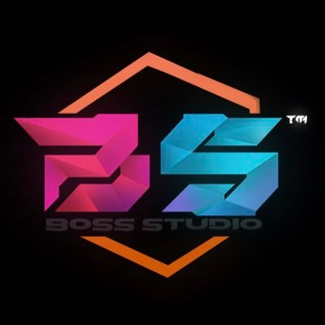
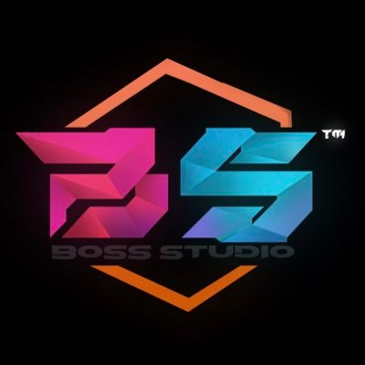

About Me


 

I'm currently a sophomore attending Cupertino High School. I have a keen interest in subjects such as Computer Science, Business, and 3D Modeling. I find myself particularly drawn to the intricacies of single-board computers and robotics, where I spend a significant portion of my time exploring their capabilities. I am proud to be affiliated with Boss Studios as a 3D Modeler, a role I've held for approximately three years. During this time, I've had the opportunity to refine my skills and contribute to various projects within the organization. In terms of programming, I am proficient in several languages, including Java, Python, Go, JavaScript, and Lua. This proficiency allows me to engage in a variety of coding endeavors and tackle diverse challenges with confidence. Looking ahead, I am eager to continue my academic journey and further explore the intersections of technology, business, and creativity. Learning and growth remain at the forefront of my aspirations, and I am excited to see where my interests and experiences will lead me in the future...